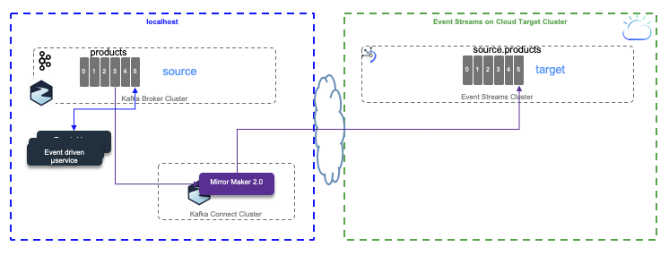

Mirror Maker 2.0 Studies¶
Mirror Maker 2.0 is the new replication feature of Kafka 2.4. In this note we are presenting different test scenarios for topic replication.
- Replicate from local cluster to Event Streams on Cloud (See detail in the scenario 1 section)
- Replicate from Strimzi 'local' Kafka cluster running on OpenShift to Event Streams on Cloud. (See detail in the scenario 2 section)
- Replicate from Event Streams on cloud being the source cluster to local Kafka cluster running on local machine (started via docker-compose) using Strimzi Kafka docker image.
- Replicate from Event Streams on premise running on Openshift being the source cluster to Event Stream on the Cloud as target cluster.
| Environment | Source | Target | Connect |
|---|---|---|---|
| 1 | Local | Event Streams on Cloud | Local |
| 2 | Strimzi on OCP | Event Streams on Cloud | OCP / Roks |
| 3 | Event Streams on Cloud | Local | Local |
| 4 | Event Streams on Cloud | Strimzi on OCP | OCP/ Roks |
| 5 | Event Streams on OCP | Event Streams on Cloud | OCP / Roks |
The mirror-maker-2 folder includes, scripts, code and configurations to support those scenarios.
Pre-requisites¶
- You need to have one Event Streams service created on IBM Cloud.
- You may need to use Event Streams CLI. So follow those instructions to get it.
The following ibmcloud CLI command presents the Event Stream cluster's metadata, like the broker list and the cluster ID:
ibmcloud es cluster
For other CLI commands see this summary.
- To run local cluster we use docker-compose and docker. The docker compose file to start a local 3 Kafka brokers and 2 Zookeepers cluster is in
mirror-maker-2/local-clusterfolder. This compose file uses a local docker network calledkafkanet. The docker image used for Kafka is coming from Strimzi open source project and is for the Kafka 2.4 version. - When the Event Streams service is created, add a service credentials and get the brokers list and api key information. We will use them in a setenv.sh script file under
mirror-maker-2folder to define environment variables.
General concepts¶
As Mirror maker 2.0 is using kafka Connect framework, we recommend to review our summary in this note.
The figure below illustrates the mirror maker internal components running within Kafka Connect.

In distributed mode, Mirror Maker creates the following topics to the target cluster:
- mm2-configs.source.internal: This topic will store the connector and task configurations.
- mm2-offsets.source.internal: This topic is used to store offsets for Kafka Connect.
- mm2-status.source.internal: This topic will store status updates of connectors and tasks.
- source.heartbeats
- source.checkpoints.internal
A typical mirror maker configuration is done via property file and defines source and target clusters with their connection properties and the replication flow definitions. Here is a simple example for a local cluster to a target cluster using TLS v1.2 and Sasl authentication protocol.
clusters=source, target
source.bootstrap.servers=${KAFKA_SOURCE_BROKERS}
target.bootstrap.servers=${KAFKA_TARGET_BROKERS}
target.security.protocol=SASL_SSL
target.ssl.protocol=TLSv1.2
target.ssl.endpoint.identification.algorithm=https
target.sasl.mechanism=PLAIN
target.sasl.jaas.config=org.apache.kafka.common.security.plain.PlainLoginModule required username="token" password=${KAFKA_TARGET_APIKEY};
# enable and configure individual replication flows
source->target.enabled=true
source->target.topics=products
tasks.max=10
- White listed topics are set with the
source->target.topicsattribute of the replication flow and uses Java regular expression syntax. - Blacklisted topics: by default the following pattern is applied:
blacklist = [follower\.replication\.throttled\.replicas, leader\.replication\.throttled\.replicas, message\.timestamp\.difference\.max\.ms, message\.timestamp\.type, unclean\.leader\.election\.enable, min\.insync\.replicas]
topics.blacklist. Comma-separated lists are also supported and Java regular expression.
Internally MirrorSourceConnector and MirrorCheckpointConnector will
create multiple tasks (up to tasks.max property), MirrorHeartbeatConnector
creates only one single task. MirrorSourceConnector will have one task per topic-partition to replicate, while MirrorCheckpointConnector will have one task per consumer group. The Kafka connect framework uses the coordinator API, with the assign() API, so there is no consumer group while fetching data from source topic. There is no call to commit() neither: the rebalancing occurs only when there is a new topic created that matches the whitelist pattern.
Scenario 1: From Kafka local as source to Event Streams on Cloud as Target¶
The test scenario goal is to send the product definitions in the local products topic and then start mirror maker to see the data replicated to the source.products topic in Event Streams cluster.

- Set the environment variables in
setenv.shscript for the source broker to be your local cluster, and the target to be event streams. Be sure to also set Event Streams APIKEY:
export KAFKA_SOURCE_BROKERS=kafka1:9092,kafka2:9093,kafka3:9094
export KAFKA_TARGET_BROKERS=broker-3-qnprtqnp7hnkssdz.kafka.svc01.us-east.eventstreams.cloud.ibm.com:9093,broker-1-qnprtqnp7hnkssdz.kafka.svc01.us-east.eventstreams.cloud.ibm.com:9093,broker-0-qnprtqnp7hnkssdz.kafka.svc01.us-east.eventstreams.cloud.ibm.com:9093,broker-5-qnprtqnp7hnkssdz.kafka.svc01.us-east.eventstreams.cloud.ibm.com:9093,broker-2-qnprtqnp7hnkssdz.kafka.svc01.us-east.eventstreams.cloud.ibm.com:9093,broker-4-qnprtqnp7hnkssdz.kafka.svc01.us-east.eventstreams.cloud.ibm.com:9093
export KAFKA_TARGET_APIKEY="<password attribut in event streams credentials>"
- It may be needed to create the topics in the target cluster. This depends if mirror maker 2.0 is able to access the AdminClient API. Normally we observed with Event streams APIKEY it is possible to create topic with AdminClient, so there is no need to do the following commands. For other configuration where Access Control policies do not authorize program to create topic dynamically, the commands performed by and admin user will create the needed topic. (the mm2 prefix is the one used by mirror maker, but the name of the topic could be defined in the mirror maker properties)
ibmcloud es topic-create -n mm2-configs.source.internal -p 1 -c cleanup.policy=compact
ibmcloud es topic-create -n mm2-offsets.source.internal -p 25 -c cleanup.policy=compact
ibmcloud es topic-create -n mm2-status.source.internal -p 5 -c cleanup.policy=compact
ibmcloud es topic-create -n source.products -p 1
ibmcloud es topic-create -n source.heartbeats -p 1 -c cleanup.policy=compact
ibmcloud es topic-create -n source.checkpoints.internal -p 1 -c cleanup.policy=compact
- In one Terminal window, start the local cluster using
docker-composeunder themirror-maker-2/local-clusterfolder:docker-compose up &. The data are persisted on the local disk in this folder. - If this is the first time you started the source cluster, you need to create the
productstopic. Start a Kafka container to access the Kafka tools with the command:
docker run -ti -v $(pwd):/home --network kafkanet strimzi/kafka:latest-kafka-2.4.0 bash
Then in the bash shell, go to /home/local-cluster folder and execute the script: ./createProductsTopic.sh. Verify topic is created with the command: /opt/kafka/bin/kafka-topics.sh --bootstrap-server kafka1:9092 --list
- Send some products data to this topic. For that we use a docker python image. The docker file to build this image is
python-kafka/Dockerfile-pythonso the command to build this image (if you change the image name be sure to use the new name in future command) is:docker build -f Dockerfile-python -t jbcodeforce/python37 .
Once the image is built, start the python environment with the following commands:
source ./setenv.sh
docker run -ti -v $(pwd):/home --rm -e KAFKA_BROKERS=$KAFKA_SOURCE_BROKERS --network kafkanet jbcodeforce/python37 bash
In this isolated python container bash shell do the following to send the 5 first products:
$ echo $KAFKA_BROKERS
kafka1:9092,kafka2:9093,kafka3:9094
$ python SendProductToKafka.py ./data/products.json
[KafkaProducer] - {'bootstrap.servers': 'kafka1:9092,kafka2:9093,kafka3:9094', 'group.id': 'ProductsProducer'}
{'product_id': 'P01', 'description': 'Carrots', 'target_temperature': 4, 'target_humidity_level': 0.4, 'content_type': 1}
{'product_id': 'P02', 'description': 'Banana', 'target_temperature': 6, 'target_humidity_level': 0.6, 'content_type': 2}
{'product_id': 'P03', 'description': 'Salad', 'target_temperature': 4, 'target_humidity_level': 0.4, 'content_type': 1}
{'product_id': 'P04', 'description': 'Avocado', 'target_temperature': 6, 'target_humidity_level': 0.4, 'content_type': 1}
{'product_id': 'P05', 'description': 'Tomato', 'target_temperature': 4, 'target_humidity_level': 0.4, 'content_type': 2}
[KafkaProducer] - Message delivered to products [0]
[KafkaProducer] - Message delivered to products [0]
[KafkaProducer] - Message delivered to products [0]
[KafkaProducer] - Message delivered to products [0]
[KafkaProducer] - Message delivered to products [0]
- To validate the data are in the source topic we can use the kafka console consumer. Here are the basic commands:
docker run -ti -v $(pwd):/home --network kafkanet strimzi/kafka:latest-kafka-2.4.0 bash
$ cd bin
$ ./kafka-console-consumer.sh --bootstrap-server kafka1:9092 --topic products --from-beginning
- Define the event streams cluster properties file for the Kafka tool command. Set the password attribute of the
jaas.configto match Event Streams APIKEY. Theeventstream.propertiesfile looks like:
bootstrap.servers=broker-3-qnprtqnp7hnkssdz.kafka.svc01.us-east.eventstreams.cloud.ibm.com:9093,broker-1-qnprtqnp7hnkssdz.kafka.svc01.us-east.eventstreams.cloud.ibm.com:9093,broker-0-qnprtqnp7hnkssdz.kafka.svc01.us-east.eventstreams.cloud.ibm.com:9093,broker-5-qnprtqnp7hnkssdz.kafka.svc01.us-east.eventstreams.cloud.ibm.com:9093,broker-2-qnprtqnp7hnkssdz.kafka.svc01.us-east.eventstreams.cloud.ibm.com:9093,broker-4-qnprtqnp7hnkssdz.kafka.svc01.us-east.eventstreams.cloud.ibm.com:9093
security.protocol=SASL_SSL
ssl.protocol=TLSv1.2
sasl.mechanism=PLAIN
sasl.jaas.config=org.apache.kafka.common.security.plain.PlainLoginModule required username="token" password=....;
- Restart the
kafka-console-consumerwith the bootstrap URL to access to Event Streams and with the replicated topic:source.products. Use the previously created properties file to get authentication properties so the command looks like:
source /home/setenv.sh
./kafka-console-consumer.sh --bootstrap-server $KAFKA_TARGET_BROKERS --consumer.config /home/eventstream.properties --topic source.products --from-beginning
- Now we are ready to start Mirror Maker 2.0, close to the local cluster, using, yet another docker image:
docker run -ti -v $(pwd):/home --network kafkanet strimzi/kafka:latest-kafka-2.4.0 bash
$ /home/local-cluster/launchMM2.sh
This launchMM2.sh script is updating a template properties file with the values of the environment variables and calls with this updated file: /opt/kafka/bin/connect-mirror-maker.sh mm2.properties
The trace includes a ton of messages, which displays different Kafka connect consumers and producers, workers and tasks. The logs can be found in the /tmp/logs folder within the docker container. The table includes some of the elements of this configuration:
| Name | Description |
|---|---|
| Worker clientId=connect-2, groupId=target-mm2 | Herder for target cluster topics but reading source topic |
| Producer clientId=producer-1 | Producer to taget cluster |
| Consumer clientId=consumer-target-mm2-1, groupId=target-mm2] | Subscribed to 25 partition(s): mm2-offsets.target.internal-0 to 24 |
| Consumer clientId=consumer-target-mm2-2, groupId=target-mm2] | Subscribed to 5 partition(s): mm2-status.target.internal-0 to 4 |
| Consumer clientId=consumer-target-mm2-3, groupId=target-mm2] | Subscribed to partition(s): mm2-configs.target.internal-0 |
| Worker clientId=connect-2, groupId=target-mm2 . Starting connectors and tasks using config offset 6. | This trace shows mirror maker will start to consume message from the offset 6. A previous run has already committed the offset for this client id. This illustrate a Mirror Maker restarts |
| Starting connector MirrorHeartbeatConnector and Starting task MirrorHeartbeatConnector-0 | |
| Starting connector MirrorCheckpointConnector | |
| Starting connector MirrorSourceConnector |
As expected, in the consumer console we can see the 5 product messages arriving to the source.topics after the replication complete.
{'bootstrap.servers': 'kafka1:9092,kafka2:9093,kafka3:9094', 'group.id': 'ProductsProducer'}
{'product_id': 'P01', 'description': 'Carrots', 'target_temperature': 4, 'target_humidity_level': 0.4, 'content_type': 1}
{'product_id': 'P02', 'description': 'Banana', 'target_temperature': 6, 'target_humidity_level': 0.6, 'content_type': 2}
{'product_id': 'P03', 'description': 'Salad', 'target_temperature': 4, 'target_humidity_level': 0.4, 'content_type': 1}
{'product_id': 'P04', 'description': 'Avocado', 'target_temperature': 6, 'target_humidity_level': 0.4, 'content_type': 1}
{'product_id': 'P05', 'description': 'Tomato', 'target_temperature': 4, 'target_humidity_level': 0.4, 'content_type': 2}
Scenario 2: Run Mirror Maker 2 Cluster close to target cluster¶
This scenario is similar to the scenario 1 but Mirror Maker 2.0 now, runs within an OpenShift cluster in the same data center as Event Streams cluster, so closer to the target cluster:

We have created an Event Streams cluster on Washington DC data center. We have Strimzi operators deployed in Washington data center OpenShift Cluster.
Producers are running locally on the same OpenShift cluster, where vanilla Kafka is running, or can run remotely using exposed Kafka brokers Openshift route. (The black rectangles in the figure above represent those producers.)
What needs to be done:
- Get a OpenShift cluster in the same data center as Event Streams service: See this product introduction.
- Create a project in OpenShift, for example:
mirror-maker-2-to-es. Remember it is mapped to a namespace in Kubernetes. - At the minimum, to run Mirror Maker 2, we need to deploy the Strimzi Custom Resource Definitions, and the Mirror Maker 2.0 operator. See the detail in sections from the deployment note. The 0.17.0 source is in this repository, unzip and use the
installfolder with Strimzi installation instructions.
The service account and role binding do not need to be re-installed if you did it previously.
-
If not done yet, create a secret for the API KEY of the Event Streams cluster:
oc create secret generic es-api-secret --from-literal=password=<replace-with-event-streams-apikey> -
As the vanilla kafka source cluster is using TLS to communicate between client and brokers, we need to create a k8s secret for a Java truststore created from the
ca.certof the source cluster. This certificate is also in another secret:my-cluster-clients-ca-cert.
# build a local crt file from the secret:
oc extract secret/my-cluster-clients-ca-cert --keys=ca.crt --to=- > ca.crt
# Verify the certificate:
openssl x509 -in ca.crt -text
# transform it for java truststore.jks:
keytool -import -trustcacerts -alias root -file ca.crt -keystore truststore.jks -storepass password -noprompt
# create a secret from file
oc create secret generic kafka-truststore --from-file=./truststore.jks
# Verify the created secret
oc describe secret kafka-truststore
Attention
At this step, we have two options, one using the Mirror Maker Operator and get the configuration of it via a yaml file, or use properties file and a special docker image. As of 3/20/2020 we have found an issue on Strimzi 0.17-rc2 MM operator, so we are proposing to use the properties approach as documented in this separated note.
- Define source and target cluster properties in mirror maker 2.0
kafka-to-es-mm2.ymldescriptor file. We strongly recommend to study the schema definition of this custom resource from this page. The yaml file we used is here.
Note
connectCluster defined the cluster alias used for Kafka Connect, it must match a cluster in the list at spec.clusters.
The config part can match the Kafka configuration for consumer or producer, except properties starting by ssl, sasl, security, listeners, rest, bootstarp.servers which are declared at the cluster definition level. Also we have some challenges to make the connection to event streams working, as of Strimzi version 0.17 RC2, we need to add an empty tls: {} stanza to get connected. Also below, the declaration is using the previously defined secret for event streams API key.
alias: "event-streams-wdc-as-target"
bootstrapServers: broker-3...
tls: {}
authentication:
passwordSecret:
secretName: es-api-secret
password: password
username: token
type: plain
- Deploy Mirror maker 2.0 within this project.
oc apply -f kafka-to-es-mm2.yaml
This commmand create a kubernetes deployment as illustrated below, with one pod as the replicas is set to 1. If we need to add parallel processing because of the topic to replicate has multiple partitions, or there are a lot of topics to replicate, then adding pods will help to scale horizontally. The pods are in the same consumer group, so Kafka Brokers will do the partition rebalancing among those new added consumers.

- To validate the replication works, we will connect a consumer to the
source.productstopic on Event Streams. So we define a target cluster property file (eventstreams.properties) like:
bootstrap.servers=broker-3-q.kafka.svc01.us-east.eventstreams.cloud.ibm.com:9093,broker-4-q.kafka.svc01.us-east.eventstreams.cloud.ibm.com:9093
security.protocol=SASL_SSL
ssl.protocol=TLSv1.2
sasl.mechanism=PLAIN
sasl.jaas.config=org.apache.kafka.common.security.plain.PlainLoginModule required username="token" password="am_...";
- Start a producer to send product records to the source Kafka cluster. If you have done the scenario 1, the first product definitions may be already in the target cluster, so we can send a second batch of products using a second data file:
export KAFKA_BROKERS="my-cluster-kafka-bootstrap-jb-kafka-strimzi.gse-eda-demos-fa9ee67c9ab6a7791435450358e564cc-0001.us-east.containers.appdomain.cloud:443"
export KAFKA_CERT="/home/ca.crt"
docker run -ti -v $(pwd):/home --rm -e KAFKA_CERT=$KAFKA_CERT -e KAFKA_BROKERS=$KAFKA_BROKERS jbcodeforce/python37 bash
python SendProductToKafka.py ./data/products2.json
Note
The python code uses the CA certificate and not the java truststore. The Kafka option is ssl.ca.location. If the code was done in Java then the trustore needs to be part of the docker image or mounted from a kubernetes secret into the expected file inside the container.
As an alternate to use this external producer, we can start a producer as pod inside Openshift, and then send the product one by one:
oc run kafka-producer -ti --image=strimzi/kafka:latest-kafka-2.4.0 --rm=true --restart=Never -- bin/kafka-console-producer.sh --broker-list my-cluster-kafka-bootstrap:9092 --topic products
If you don t see a command prompt, try pressing enter.
>{'product_id': 'P01', 'description': 'Carrots', 'target_temperature': 4, 'target_humidity_level': 0.4, 'content_type': 1}
>{'product_id': 'P02', 'description': 'Banana', 'target_temperature': 6, 'target_humidity_level': 0.6, 'content_type': 2}
>{'product_id': 'P03', 'description': 'Salad', 'target_temperature': 4, 'target_humidity_level': 0.4, 'content_type': 1}
>{'product_id': 'P04', 'description': 'Avocado', 'target_temperature': 6, 'target_humidity_level': 0.4, 'content_type': 1}
>{'product_id': 'P05', 'description': 'Tomato', 'target_temperature': 4, 'target_humidity_level': 0.4, 'content_type': 2}
- To validate the source
productstopic has records, start a consumer as pod on Openshift within the source Kafka cluster using the Strimzi/kafka image.
oc run kafka-consumer -ti --image=strimzi/kafka:latest-kafka-2.4.0 --rm=true --restart=Never -- bin/kafka-console-consumer.sh --bootstrap-server my-cluster-kafka-bootstrap:9092 --topic products --from-beginning
- Finally to validate the product records are replicated to the Event Streams
source.productswe need to start a consumer connected to Event streams.
oc run kafka-consumer -ti --image=strimzi/kafka:latest-kafka-2.4.0 --rm=true --restart=Never -- bin/kafka-console-consumer.sh --bootstrap-server broker-3-qnprtqnp7hnkssdz.kafka.svc01.us-east.eventstreams.cloud.ibm.com:9093,broker-1-qnprtqnp7hnkssdz.kafka.svc01.us-east.eventstreams.cloud.ibm.com:9093,broker-0-qnprtqnp7hnkssdz.kafka.svc01.us-east.eventstreams.cloud.ibm.com:9093,broker-5-qnprtqnp7hnkssdz.kafka.svc01.us-east.eventstreams.cloud.ibm.com:9093,broker-2-qnprtqnp7hnkssdz.kafka.svc01.us-east.eventstreams.cloud.ibm.com:9093,broker-4-qnprtqnp7hnkssdz.kafka.svc01.us-east.eventstreams.cloud.ibm.com:9093 --consumer-property ssl.protocol=TLSv1.2 --consumer-property security.protocol=SASL_SSL --consumer-property sasl.jaas.config="org.apache.kafka.common.security.plain.PlainLoginModule required username=token password=am_rbb9e794mMwhE-KGPYo0hhW3h91e28OhT8IlruFe5;" --consumer-property sasl.mechanism=PLAIN --topic source.products --from-beginning
Scenario 3: From Event Streams to local cluster¶
For this scenario the source is Event Streams on IBM Cloud and the target is a local server (may be on a laptop using vanilla Kafka image (Strimzi kafka 2.4 docker image) started with docker compose). This target cluster runs two zookeeper nodes, and three kafka nodes. We need 3 kafka brokers as mirror maker created topics with a replication factor set to 3.

This time the producer adds headers to the Records sent so we can validate headers replication. The file es-cluster/es-mirror-maker.properties declares the mirroring settings as below:
clusters=source, target
source.bootstrap.servers=broker-3-qnprtqnp7hnkssdz.kafka.svc01.us-east.eventstreams.cloud.ibm.com:9093,broker-1-qnprtqnp7hnkssdz.kafka.svc01.us-east.eventstreams.cloud.ibm.com:9093,broker-0-qnprtqnp7hnkssdz.kafka.svc01.us-east.eventstreams.cloud.ibm.com:9093,broker-5-qnprtqnp7hnkssdz.kafka.svc01.us-east.eventstreams.cloud.ibm.com:9093,broker-2-qnprtqnp7hnkssdz.kafka.svc01.us-east.eventstreams.cloud.ibm.com:9093,broker-4-qnprtqnp7hnkssdz.kafka.svc01.us-east.eventstreams.cloud.ibm.com:9093
source.security.protocol=SASL_SSL
source.ssl.protocol=TLSv1.2
source.sasl.mechanism=PLAIN
source.sasl.jaas.config=org.apache.kafka.common.security.plain.PlainLoginModule required username="token" password="985...";
target.bootstrap.servers=kafka1:9092,kafka2:9093,kafka3:9094
# enable and configure individual replication flows
source->target.enabled=true
source->target.topics=orders
-
Start the target cluster runnning on your laptop using:
docker-compose up -
Start mirror maker2.0:
By using a new container, start another kakfa 2.4+ docker container, connected to the brokers via the
kafkanetnetwork, and mounting the configuration in the/home:docker run -ti --network kafkanet -v $(pwd):/home strimzi/kafka:latest-kafka-2.4.0 bashInside this container starts mirror maker 2.0 using the script:
/opt/kakfa/bin/connect-mirror-maker.sh/opt/kakfa/bin/connect-mirror-maker.sh /home/strimzi-mm2.propertiesThe
strimzi-mm2.propertiesproperties file given as argument defines the source and target clusters and the topics to replicate:clusters=source, target source.bootstrap.servers=my-cluster-kafka-bootstrap-jb-kafka-strimzi.gse-eda-demos-fa9ee67c9ab6a7791435450358e564cc-0001.us-east.containers.appdomain.cloud:443 source.security.protocol=SSL source.ssl.truststore.password=password source.ssl.truststore.location=/home/truststore.jks target.bootstrap.servers=kafka1:9092,kafka2:9093,kafka3:9094 # enable and configure individual replication flows source->target.enabled=true source->target.topics=ordersAs the source cluster is deployed on Openshift, the exposed route to access the brokers is using TLS connection. So we need the certificate and create a truststore to be used by those Java programs. All kafka tools are done in java or scala so running in a JVM, which needs truststore for keep trusted TLS certificates. When running from a remote system to get the certificate do the following steps:
-
Get the host ip address from the Route resource
oc get routes my-cluster-kafka-bootstrap -o=jsonpath='{.status.ingress[0].host}{"\n"}' -
Get the TLS certificate from the broker
oc get secrets oc extract secret/my-cluster-cluster-ca-cert --keys=ca.crt --to=- > ca.crt -
Transform the certificate fo java truststore
keytool -import -trustcacerts -alias root -file ca.crt -keystore truststore.jks -storepass password -noprompt
For Openshift or Kubernetes deployment, the mirror maker descriptor needs to declare the TLS stamza:
mirrors: - sourceCluster: "my-cluster-source" targetCluster: "my-cluster-target" sourceConnector: config: replication.factor: 1 offset-syncs.topic.replication.factor: 1 sync.topic.acls.enabled: "false" targetConnector: tls: trustedCertificates: - secretName: my-cluster-cluster-cert certificate: ca.crt -
-
The consumer may be started in second or third step. To start it, you can use a new container or use one of the running kafka broker container. Using the
Docker perspectivein Visual Code, we can get into a bash shell within one of the Kafka broker container. The local folder is mounted to/home. Then the script,consumeFromLocal.sh source.orderswill get messages from the replicated topic:source.orders
Scenario 4: From Event Streams On Cloud to Strimzi Cluster on Openshift¶
We are reusing the Event Streams on Cloud cluster on Washington DC data center as source target and the vanilla Kafka 2.4 cluster as target, also running within Washington data center in a OpenShift Cluster. As both clusters are in the same data center, we deploy Mirror Maker 2.0 close to target kafka cluster.

Typical errors in Mirror Maker 2 traces¶
- Plugin class loader for connector: 'org.apache.kafka.connect.mirror.MirrorCheckpointConnector' was not found.
- This error message is a light issue in kafka 2.4 and does not impact the replication. In Kafka 2.5 this message is for DEBUG logs.
- Error while fetching metadata with correlation id 2314 : {source.heartbeats=UNKNOWN_TOPIC_OR_PARTITION}:
- Those messages may come from multiple reasons. One is the name topic is not created. In Event Streams topics needs to be created via CLI or User Interface. It can also being related to the fact the consumer polls on a topic that has just been created and the leader for this topic-partition is not yet available, you are in the middle of a leadership election.
- The advertised listener may not be set or found.
- Exception on not being able to create Log directory: do the following:
export LOG_DIR=/tmp/logs - ERROR WorkerSourceTask{id=MirrorSourceConnector-0} Failed to flush, timed out while waiting for producer to flush outstanding 1 messages
- ERROR WorkerSourceTask{id=MirrorSourceConnector-0} Failed to commit offsets (org.apache.kafka.connect.runtime.SourceTaskOffsetCommitter:114)